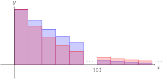

Use the direct comparison and limit comparison tests to determine if a series converges or diverges.
Subsection8.6.1Activities
Activity8.6.1.
Let \(\{a_n\}_{n=1}^\infty\) be a sequence, with infinite series \(\displaystyle \sum_{n=1}^\infty a_n=a_1+a_2+\cdots \text{.}\) Suppose \(\{b_n\}_{n=1}^\infty\) is a sequence where each \(b_n=3a_n\text{,}\) whith infinite series \(\displaystyle \sum_{n=1}^\infty b_n=\sum_{n=1}^\infty 3a_n=3a_1+3a_2+\cdots \text{.}\)
(a)
If \(\displaystyle \sum_{n=1}^\infty a_n=5\) what can be said about \(\displaystyle\sum_{n=1}^\infty b_n\text{?}\)
\(\displaystyle\sum_{n=1}^\infty b_n\) converges but the value cannot be determined.
\(\displaystyle\sum_{n=1}^\infty b_n\) converges to \(3\cdot 5=15\text{.}\)
\(\displaystyle\sum_{n=1}^\infty b_n\) converges to some value other than 15.
\(\displaystyle\sum_{n=1}^\infty b_n\) diverges.
It cannot be determined whether \(\displaystyle\sum_{n=1}^\infty b_n\) converges or diverges.
(b)
If \(\displaystyle \sum_{n=1}^\infty a_n\) diverges, what can be said about \(\displaystyle\sum_{n=1}^\infty b_n\text{?}\)
\(\displaystyle\sum_{n=1}^\infty b_n\) converges but the value cannot be determined.
\(\displaystyle\sum_{n=1}^\infty b_n\) converges and the value can be determined.
\(\displaystyle\sum_{n=1}^\infty b_n\) diverges.
It cannot be determined whether \(\displaystyle\sum_{n=1}^\infty b_n\) converges or diverges.
Whether or not \(\displaystyle \sum_{n=0}^\infty b_n\) converges or diverges cannot be determined with this information.
(b)
Suppose that \(\displaystyle \sum_{n=1}^\infty a_n=\sum_{n=1}^\infty \frac{1}{n+1}\) which diverges. Which of the following statements are true?
\(\displaystyle 0\leq \frac{1}{2n^2} \leq \frac{1}{n+1}\) for each \(n \geq 1\) and \(\displaystyle \sum_{n=1}^\infty \frac{1}{2n^2}\) is a convergent \(p\)-series where \(p=2\text{.}\)
\(\displaystyle 0\leq \frac{1}{2n}\leq \frac{1}{n+1}\) for each \(n \geq 1\) and \(\displaystyle \sum_{n=1}^\infty \frac{1}{2n}\) is a divergent \(p\)-series where \(p=1\text{.}\)
(c)
Suppose that \(\displaystyle \sum_{n=0}^\infty a_n\) was some series that diverges. What could be said about \(\{b_n\}\text{?}\)
Whether or not \(\displaystyle \sum_{n=0}^\infty a_n\) converges or diverges cannot be determined with this information.
(e)
Suppose that \(\displaystyle \sum_{n=0}^\infty b_n=\sum_{n=0}^\infty \frac{1}{3^n}\) which converges. Which of the following statements are true?
\(\displaystyle 0\leq \frac{1}{3^n} \leq \frac{1}{2^n}\) for each \(n\) and \(\displaystyle \sum_{n=0}^\infty \frac{1}{2^n}\) is a convergent geometric series where \(\displaystyle |r|=\frac{1}{2} \lt 1\text{.}\)
\(\displaystyle 0\leq \frac{1}{3^n} \leq 1\) for each \(n\) and \(\displaystyle \sum_{n=0}^\infty 1\) diverges by the Divergence Test.
(f)
Suppose that \(\displaystyle \sum_{n=0}^\infty b_n\) was some series that converges. What could be said about \(\{a_n\}\text{?}\)
Whether or not \(\displaystyle \sum_{n=0}^\infty a_n\) converges or diverges cannot be determined with this information.
Fact8.6.12.
Supppose we have sequences \(\{a_n\}, \{b_n\}\) so that for some \(k\) we have that \(0\leq b_n\leq a_n\) for each \(k\geq n\text{.}\) Then we have the following results:
If \(\displaystyle\sum_{k=n}^\infty a_n\) converges, then so does \(\displaystyle\sum_{k=n}^\infty b_n\text{.}\)
If \(\displaystyle\sum_{k=n}^\infty b_n\) diverges, then so does \(\displaystyle\sum_{k=n}^\infty a_n\text{.}\)
Activity8.6.13.
Suppose that you were handed positive sequences \(\{a_n\}, \{b_n\}\text{.}\) For the first few values \(a_n\geq b_n\text{,}\) but after that what happens is unclear until \(n=100\text{.}\) Then for any \(n\geq 100\) we have that \(a_n \leq b_n\text{.}\)

Plots of sequences \(\{a_n\}, \{b_n\}\) where \(a_n\geq b_n\geq 0\) initially but eventually \(a_n\leq b_n\geq 0\text{.}\)
Figure181.Plots of \(\{a_n\}, \{b_n\}\)
(a)
How might we best utilize Fact 8.6.12 to determine the convergence of \(\displaystyle \sum_{n=0}^\infty a_n\) or \(\displaystyle \sum_{n=0}^\infty b_n\text{?}\)
Since \(a_n\) is sometimes greater than, and sometimes less than \(b_n\text{,}\) there is no way to utilize Fact 8.6.12.
Since initially, we have \(b_n\leq a_n\text{,}\) we can utilize Fact 8.6.12 by assuming \(a_n\geq b_n\text{.}\)
Since we can rewrite \(\displaystyle \sum_{n=0}^\infty a_n=\sum_{n=0}^{99} a_n+\sum_{n=100}^\infty a_n\) and \(\displaystyle \sum_{n=0}^\infty b_n=\sum_{n=0}^{99} b_n+\sum_{n=100}^\infty b_n\) and \(\displaystyle \sum_{n=0}^{99} a_n, \sum_{n=0}^{99} b_n\) are necessarily finite, we can compare \(\displaystyle \sum_{n=100}^\infty a_n, \sum_{n=100}^\infty b_n\) with Fact 8.6.12.
Fact8.6.14.The Direct Comparison Test.
Let \(\displaystyle\sum a_n\) and \(\displaystyle\sum b_n\) be series with positive terms. If there is a \(k\) such that \(b_n\leq a_n\) for each \(n\geq k\text{,}\) then:
If \(\displaystyle \sum a_n\) converges, then so does \(\displaystyle \sum b_n\text{.}\)
If \(\displaystyle \sum b_n\) diverges, then so does \(\displaystyle \sum a_n\text{.}\)
Activity8.6.15.
Suppose we wish to determine if \(\displaystyle \sum_{n=1}^\infty \frac{1}{2n+3}\) converged using Fact 8.6.14.
(a)
Does \(\displaystyle \sum_{n=1}^\infty \frac{1}{3n}\) converge or diverge?
(b)
For which value \(k\) is \(\displaystyle\frac{1}{3n}\leq \frac{1}{2n+3}\) for each \(n\geq k\text{?}\)
\(\displaystyle\frac{1}{3n}\leq \frac{1}{2n+3}\) for each \(n\geq k=0\text{.}\)
\(\displaystyle\frac{1}{3n}\leq \frac{1}{2n+3}\) for each \(n\geq k=1\text{.}\)
\(\displaystyle\frac{1}{3n}\leq \frac{1}{2n+3}\) for each \(n\geq k=2\text{.}\)
\(\displaystyle\frac{1}{3n}\leq \frac{1}{2n+3}\) for each \(n\geq k=3\text{.}\)
There is no \(k\) for which \(\displaystyle \frac{1}{3n}\leq \frac{1}{2n+3}\) for each \(n\geq k\text{.}\)
(c)
Use Fact 8.6.14 and compare \(\displaystyle \sum_{n=1}^\infty \frac{1}{2n+3}\) to \(\displaystyle \sum_{n=1}^\infty \frac{1}{3n}\) to determine if \(\displaystyle \sum_{n=1}^\infty \frac{1}{2n+3}\) converges or diverges.
Activity8.6.16.
Suppose we wish to determine if \(\displaystyle \sum_{n=1}^\infty \frac{1}{n^2+5}\) converged using Fact 8.6.14.
(a)
Which series should we compare \(\displaystyle \sum_{n=1}^\infty \frac{1}{n^2+5}\) to best utilize Fact 8.6.14?